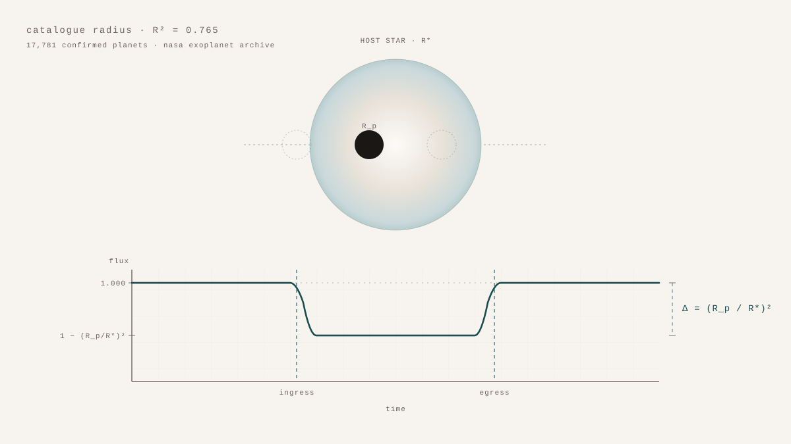

How Do You Find a Planet by Learning the Shape of Its Absence?
A confirmed exoplanet is a strange object. It is observed indirectly, by the periodic dimming of its star, and its radius is reported as a ratio between two depths of brightness: the star at full light, and the star with a planet in front of it. The radius column in any exoplanet catalogue is therefore a measurement of an absence — the missing light during the transit.
The question was whether that radius can be predicted from the other columns of the same catalogue: the host star's mass, radius, and effective temperature; the planet's orbital period and semi-major axis; and the system's distance from Earth. Three regression models on 17,781 confirmed planets from the NASA Exoplanet Archive — Ridge as a linear baseline, Random Forest and XGBoost as non-linear comparators. XGBoost achieves R² = 0.765 and RMSE = 0.527 Earth radii on a held-out test set, substantially beating the linear baseline. The radius column carries enough information in the other columns to be reconstructed reasonably well.
The feature-importance ranking is where it gets interesting. The strongest predictors of planet radius, according to Random Forest's split-gain measure, are orbital period and the system's distance from Earth.
Orbital period has a plausible physics story behind it. Planets at short periods experience strong irradiation, which drives atmospheric loss and shifts the radius distribution. The radius gap near 1.5 to 2 Earth radii — super-Earths on one side, sub-Neptunes on the other — is partly a phenomenon of orbital evolution. Period showing up high in the importances is not surprising.
Distance from Earth has no such story. The distance from the Sun to a star a few hundred parsecs away has no physical reason to affect the planet's size. What it does have is a relationship to detection. Small planets are easier to characterise around nearby stars, where the transit signal-to-noise is better and the host's properties are better constrained. The catalogue is denser in small planets at small distances because the catalogue is shaped by what we can see. The model is reading that shape.
That is the part worth writing about. The model is right, in the narrow sense: it really does predict the radius column from the other columns. But the other columns include one whose informativeness is mostly about the detector. A prediction that lifts when a feature only correlates with detectability is not a prediction about the planet. It is a prediction about how the planet was found.
The way to read R² = 0.765 in this light is not as a failure of the analysis but as a reminder that radii in exoplanet catalogues are catalogue radii, not Platonic ones. The catalogue's gaps and densities are part of the signal. The model is doing what every honest model does: telling you what the data is shaped like. The shape, here, is partly an absence.